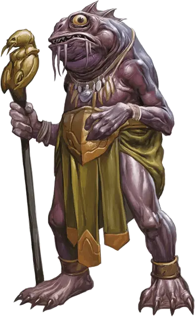

Верховный жрец Куо-тоа
Kuo-toa Archpriest
Средний Гуманоид (Куо-тоа), нейтрально-злой

Класс Доспеха 13 (природный доспех)
Хиты 97 (13к8 + 39)
Скорость 30 футов, плавая 30 футов
| мод | спас | ||
|---|---|---|---|
| СИЛ | 16 | +3 | +3 |
| ЛОВ | 14 | +2 | +2 |
| ТЕЛ | 16 | +3 | +3 |
| мод | спас | ||
|---|---|---|---|
| ИНТ | 13 | +1 | +1 |
| МДР | 16 | +3 | +3 |
| ХАР | 14 | +2 | +2 |
Навыки Восприятие +9, Религия +6
Чувства тёмное зрение 120 футов, пассивное Восприятие 19
Языки Подземный
Опасность 6 (2300 опыта)
Бонус мастерства +3
Среда обитания Подземье
Особенности
Амфибия. Куо-тоа может дышать и воздухом и под водой.
Сверхъестественное восприятие. Куо-тоа может чувствовать в пределах 30 футов присутствие невидимых существ и существ, находящихся на Эфирном Плане. Он может узнать точное местонахождение этих существ, если они будут перемещаться.
Скользкий. Куо-тоа совершает с преимуществом проверки характеристик и спасброски, совершенные чтобы высвободиться из захвата.
Чувствительность к солнечному свету. Находясь на солнечном свету, куо-тоа совершает с помехой броски атаки, а также проверки Мудрости (Восприятие), полагающиеся на зрение.
Использование заклинаний. Куо-тоа является заклинателем 10 уровня. Его базовой характеристикой является Мудрость (Сл спасброска от заклинания 14, +6 к попаданию атаками заклинаниями). У него подготовлены следующие заклинания жреца:
• Заговоры (неограниченно): священное пламя [sacred flame], указание [guidance], чудотворство [thaumaturgy];
• 1 уровень (4 ячейки): обнаружение магии [detect magic], убежище [sanctuary], щит веры [shield of faith];
• 2 уровень (3 ячейки): божественное оружие [spiritual weapon], удержание личности [hold person];
• 3 уровень (3 ячейки): духовные стражи [spirit guardians], языки [tongues];
• 4 уровень (3 ячейки): власть над водами [control water], предсказание [divination];
• 5 уровень (2 ячейки): множественное лечение ран [mass cure wounds], наблюдение [scrying];
Действия
Мультиатака. Куо-тоа совершает две рукопашные атаки.
Скипетр. Рукопашная атака оружием: +6 к попаданию, досягаемость 5 футов, одна цель. Попадание: Дробящий урон 6 (1к6 + 3) плюс урон электричеством 14 (4к6).
Безоружный удар. Рукопашная атака оружием: +6 к попаданию, досягаемость 5 футов, одна цель. Попадание: Дробящий урон 5 (1к4 + 3).
Описание
См. дополнительно статью: "Бестиарий: Куо-Тоа"